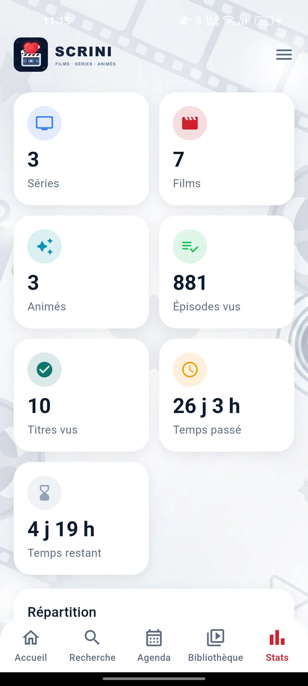

¿Por dónde ibas?
Sigue las películas, series y animes que ves, y entérate de los próximos estrenos.

Los estrenos de cine
Lo que llega a los cines del país que elijas en la app.
Filtros que de verdad sirven
Próximamente, en emisión… y se pueden combinar.
Calendario y avisos
Los estrenos que te interesan, y una notificación el día del estreno.
Películas, series y animes
Los tres en el mismo sitio, con seguimiento episodio a episodio.
También en la app
- Seguimiento de series
- Listas personalizadas
- Revisionado
- Pantalla de inicio personalizable
- Estadísticas
- Tema oscuro o claro
- Importación desde otras apps
Próximamente
- Más funciones sociales: amigos y comentarios
- Insignias y logros
La aplicación

Búsqueda

Biblioteca

Estadísticas
Tus datos son tuyos y de nadie más
Scrini no muestra publicidad ni vende tus datos. Tu biblioteca te pertenece: puedes exportarla en una hoja de cálculo, o eliminar tu cuenta y todo lo que contiene.
Política de privacidad